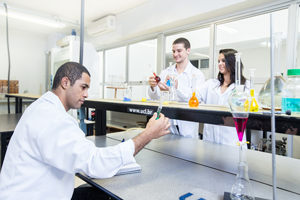
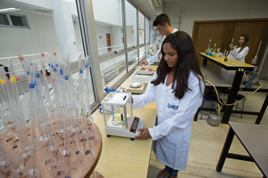
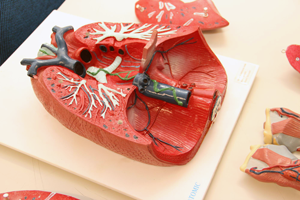
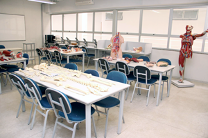
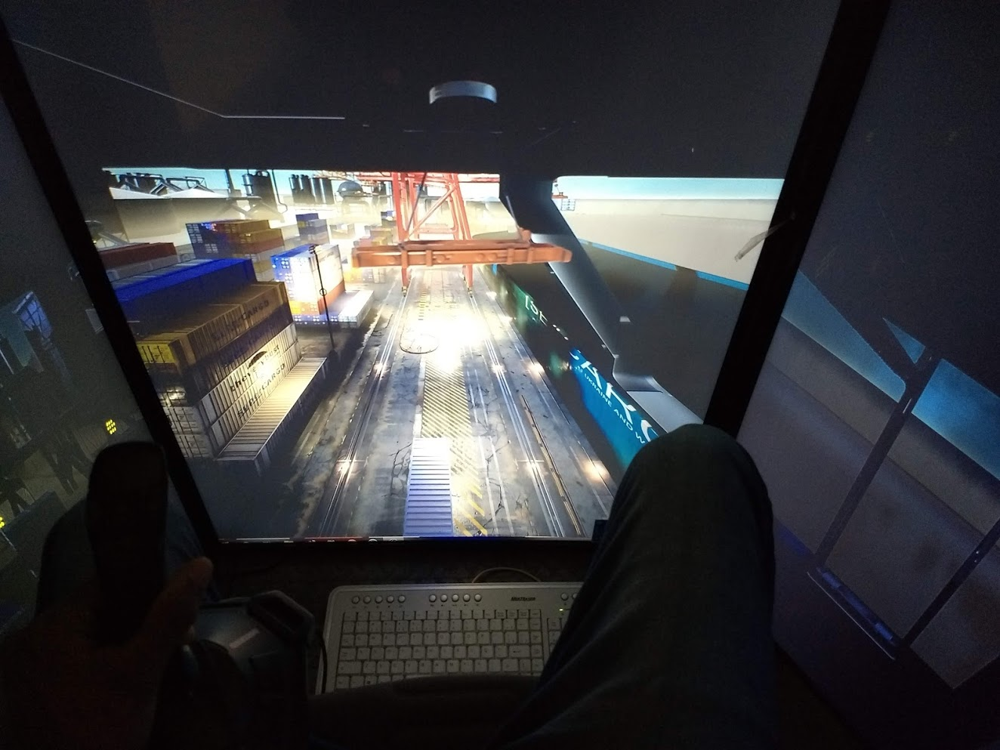
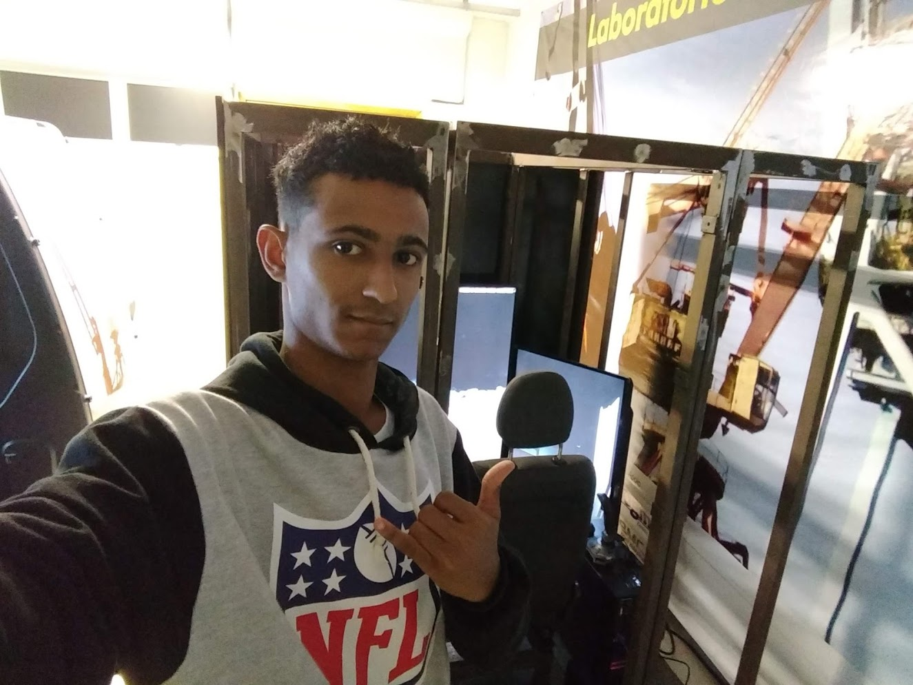

LABORATÓRIO DE QUÍMICA BÁSICA
Este laboratório tem como finalidade principal fornecer recursos aos professores e alunos para que possam principalmente realizar as práticas laboratoriais da disciplina de Química do ciclo básico dos cursos de Engenharia e também, em específico, dos cursos de Engenharia Química e Engenharia de Petróleo. É inclusive utilizada em algumas disciplinas avançadas destes cursos. Cursos atendidos neste ambiente:
- Engenharia Biomédica
- Engenharia Civil
- Engenharia de Automação e Controle
- Engenharia de Computação
- Engenharia de Petróleo
- Engenharia de Produção
- Engenharia Elétrica
- Engenharia Mecânica
- Engenharia Química  
LABORATÓRIO DE FÍSICA EXPERIMENTAL
Este laboratório tem como finalidade principal fornecer recursos aos professores e alunos para que possam principalmente realizar as práticas laboratoriais da disciplina de Física Experimental do ciclo básico dos cursos de Engenharia. Pode ser eventualmente utilizada em algumas disciplinas avançadas destes cursos. Cursos atendidos neste ambiente: Engenharia Biomédica Engenharia Civil Engenharia de Automação e Controle Engenharia de Computação Engenharia de Petróleo Engenharia de Produção Engenharia Elétrica Engenharia Mecânica Engenharia Química
LABORATÓRIO DE ANATOMIA E FISIOLOGIA
Este laboratório tem como finalidade complementar o estudo teórico da Anatomia, Fisiologia e Biologia, de forma que o futuro engenheiro possa melhor entender o funcionamento do corpo humano e das premissas biológicas básicas, com o objetivo de colocar a engenharia a serviço da vida. O ambiente citado é utilizado para o entendimento de órgãos e sistemas por meio de peças anatômicas reais e sintéticas, além do aparato necessário para as práticas das disciplinas específicas do curso de Engenharia Biomédica. Curso atendido neste ambiente: Engenharia Biomédica
 LABORATÓRIO DE QUÍMICA AVANÇADA
Este laboratório tem como finalidade principal fornecer recursos aos professores e alunos para que possam principalmente realizar as práticas laboratoriais das disciplinas de Química do ciclo profissional dos cursos de Engenharia Química, de Petróleo e Biomédica. Pode ser utilizada em algumas disciplinas avançadas dos outros cursos. Cursos atendidos neste ambiente: Engenharia Biomédica Engenharia de Petróleo Engenharia Química
LABORATÓRIO DE SIMULAÇÃO
Este laboratório é o ambiente onde são realizadas as simulações de operações de guindastes e outros equipamentos de elevação e transporte em portos. É muito utilizada em cursos de extensão, mas eventualmente é usada em alguns cursos de Engenharia e em disciplinas que abordam a área de logística. Cursos atendidos neste ambiente: Engenharia Civil Engenharia de Automação e Controle Engenharia de Computação Engenharia de Petróleo Engenharia de Produção Engenharia Mecânica Análise e Desenvolvimento de Sistemas Informática – Sistemas de Informação Administração Logística  LABORATÓRIO DE FLUIDOS E FENÔMENOS DE TRANSPORTE
ste laboratório tem como finalidade principal fornecer recursos aos professores e alunos para que possam realizar diversos experimentos no âmbito de Fenômenos de Transporte e instrumentação e ensaios na área de fluidos. Cursos atendidos neste ambiente: Engenharia Biomédica Engenharia Civil Engenharia de Automação e Controle Engenharia de Computação Engenharia de Petróleo Engenharia de Produção Engenharia Elétrica Engenharia Mecânica Engenharia Química
LABORATÓRIO DE MECANISMOS E AUTOMAÇÃO
Este laboratório tem como finalidade principal fornecer recursos aos professores e alunos para que possam realizar diversos experimentos no âmbito de controle, acionamento e instrumentação de equipamentos mecânicos/ eletro-eletrônicos. Serve também de suporte para outros laboratórios, pois a maioria de seus equipamentos é móvel, possibilitando o seu transporte para outras salas. Cursos atendidos neste ambiente: Engenharia Biomédica Engenharia Civil Engenharia de Automação e Controle Engenharia de Computação Engenharia de Petróleo Engenharia de Produção Engenharia Elétrica Engenharia Mecânica Engenharia Química Análise e Desenvolvimento de Sistemas Informática – Sistemas de Informação
LABORATÓRIO DE CIRCUITOS ELÉTRICOS
Este laboratório tem como finalidade principal fornecer recursos aos professores e alunos para que possam realizar diversos experimentos no âmbito de circuitos elétricos, eletrônicos, controle, acionamento e instrumentação de equipamentos, além de algumas disciplinas do ciclo básico dos cursos de Engenharia. Serve também de suporte para outros laboratórios, pois a maioria de seus equipamentos é móvel, possibilitando o seu transporte para outras salas. Cursos atendidos neste ambiente: Engenharia Biomédica Engenharia Civil Engenharia de Automação e Controle Engenharia de Computação Engenharia de Petróleo Engenharia de Produção Engenharia Elétrica Engenharia Mecânica Engenharia Química Análise e Desenvolvimento de Sistemas Informática – Sistemas de Informação
LABORATÓRIO DE ROBÓTICA E ACIONAMENTOS
Este laboratório tem como finalidade principal fornecer recursos aos professores e alunos para que possam realizar diversos experimentos no âmbito da robótica, tanto móvel quanto de manipulação, acionamento e controle de equipamentos eletromecânicos. Serve também de suporte para outros laboratórios, pois a maioria de seus equipamentos é móvel, possibilitando o seu transporte para outras salas. Cursos atendidos neste ambiente: Engenharia Biomédica Engenharia Civil Engenharia de Automação e Controle Engenharia de Computação Engenharia Elétrica Engenharia Mecânica Análise e Desenvolvimento de Sistemas Sistemas de Informação
LABORATÓRIO DE MATERIAIS
Este laboratório tem como finalidade principal fornecer recursos aos professores e alunos para que possam realizar diversos experimentos e ensaios no âmbito das Ciências dos Materiais, sejam de construção mecânica, elétrica ou civil. Cursos atendidos neste ambiente: Engenharia Biomédica Engenharia Civil Engenharia de Automação e Controle Engenharia de Petróleo Engenharia Elétrica Engenharia Mecânica Engenharia Química
LABORATÓRIO OFICINA
Este laboratório tem como finalidade principal fornecer recursos aos professores e alunos para que possam principalmente realizar a construção/manufatura de alguns de seus protótipos, inerentes à qualquer disciplina que exija tal criação/desenvolvimento, ou mesmo nos seu Trabalho de Conclusão de Curso. Cursos atendidos neste ambiente: Engenharia Biomédica Engenharia Civil Engenharia de Automação e Controle Engenharia de Computação Engenharia de Petróleo Engenharia de Produção Engenharia Elétrica Engenharia Mecânica Engenharia Química Oficina-1Oficina-2
LABORATÓRIO DE ROBÓTICA APLICADA
Este laboratório destina-se à aplicações avançadas de robótica de manipulação, simulando uma célula robotizada de usinagem de materiais. Cursos atendidos neste ambiente: Engenharia Biomédica Engenharia de Automação e Controle Engenharia de Computação Engenharia Elétrica Engenharia Mecânica
SALAS DE AULAS ASSISTIDAS POR COMPUTADOR
A Faculdade dispõe de 07 (sete) salas de aula assistidas por computado. Atualmente o parque de máquinas ultrapassa os 150 computadores de última geração, todos em período de garantia. Esses computadores são revisados diariamente pela equipe de manutenção que atua junto a Gestão da Tecnologia da Informação. Os laboratórios da instituição, contam com softwares de apoio ao ensino, todos devidamente licenciados. Cursos atendidos neste ambiente: Engenharia Biomédica Engenharia Civil Engenharia de Automação e Controle Engenharia de Computação Engenharia de Petróleo Engenharia de Produção Engenharia Elétrica Engenharia Mecânica Engenharia Química Análise e Desenvolvimento de Sistemas Informática – Sistemas de Informação Administração Gestão da Qualidade Gestão de Recursos Humanos Gestão Financeira Logística Marketing